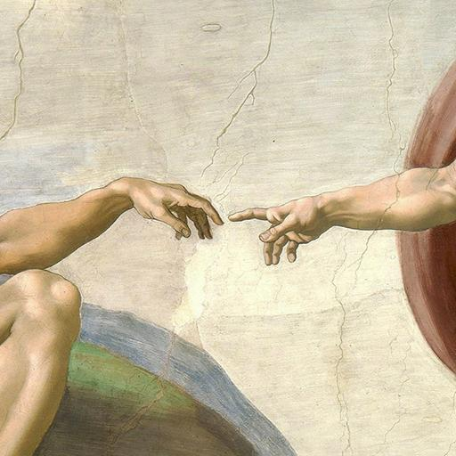

Hexagram 1 – Qian: Will of Light
Upper: Heaven (☰) · Lower: Heaven (☰)

Core Meaning
You are in a highly creative and driven phase. Your direction is clear, and you have the energy to begin something new. Trust your vision, but pair strength with restraint so your progress can last.
“I trust the light within me and move forward with courage.”
Blessing
May you move with courage, stay true to your chosen path, and shine with steady purpose.
Wisdom of the Line (Yong Jiu)
When you stop trying to control or lead everything, the highest wisdom is to let things move naturally. By not forcing the outcome, you give others room to find their own way.
Guidance by Life Area
Love
You have strong energy in this relationship and can take the lead. Just avoid overwhelming the other person; real strength includes knowing when to ease back.
Before expressing your feelings, consider whether the other person needs closeness or time to feel understood:
- Keep the relationship equal; do not turn giving into proof of love.
- Use your strength to protect the relationship, not control it.
Career
Your career momentum is strong, and this is a good time to pursue important goals. Stay focused on the right direction and do not let confidence push you past your principles.
Turn your goal into one clear first step:
- Set firm boundaries before you push ahead.
- Check your original purpose regularly so short-term momentum does not replace long-term direction.
Health
Your energy and recovery are strong, but that can make it easy to ignore small warning signs. Strength also means knowing when to stop and recover.
Keep regular rest even when you feel energetic:
- Ask what your body needs instead of how much longer you can push.
- Treat recovery as seriously as activity.
Finances
Your finances are on solid ground, with room to plan for growth. Move forward carefully, but do not mistake a good run for perfect judgment or take an all-or-nothing risk.
Keep a healthy buffer while pursuing growth:
- Judge decisions by sound reasoning, not by whether things feel easy.
- Do not let momentum override your risk limits.
Relationships
People notice your presence and may naturally follow your lead. Use that influence with respect and give others enough room to speak and act freely.
Leave room for others to respond when you speak:
- Notice whether people respect you or feel pressured by you.
- Invite rather than command.